汽车总体构造概览
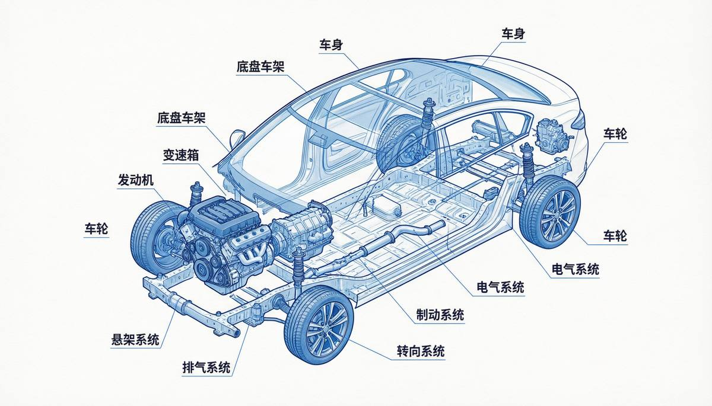
🚗 汽车由四大核心部分组成
一辆现代汽车大约由 30,000 个零部件 组成，这些零件协同工作，构成了一个复杂的机械系统。从宏观角度看，汽车可以划分为四大核心部分：
世界上第一辆实用的汽车由德国工程师卡尔·本茨（Karl Benz）于1886年发明，那是一辆三轮汽车，搭载了一台单缸四冲程汽油发动机。如今130多年过去了，汽车已从简单的机械装置演变为高度集成的机电一体化产品。
发动机
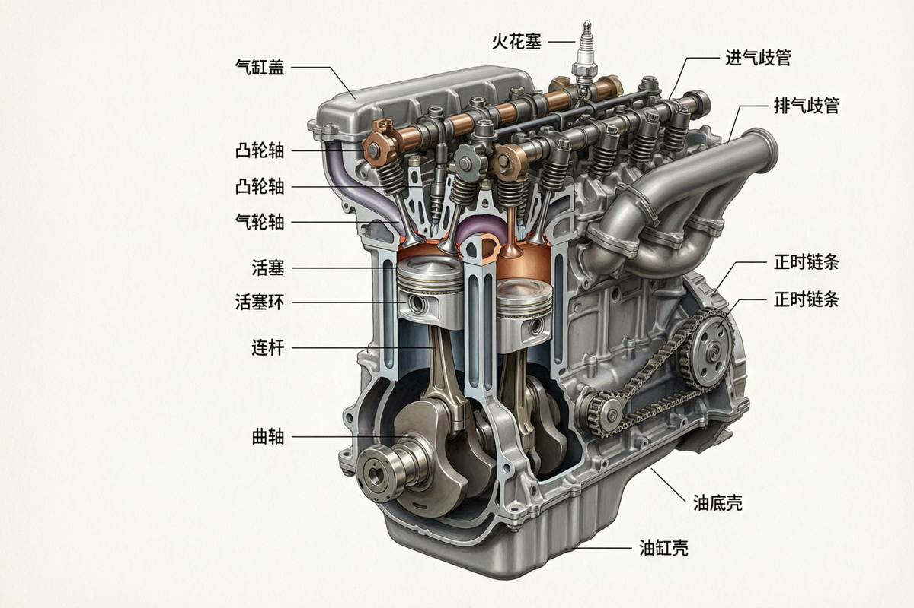
⚙️ 发动机工作原理
内燃机（Internal Combustion Engine, ICE）是大多数传统汽车的动力来源。它通过燃料在气缸内燃烧产生高温高压气体，推动活塞做往复运动，再通过连杆-曲轴机构将直线运动转化为旋转运动，最终输出扭矩驱动车轮。
现代汽车最常见的是四冲程发动机，每个工作循环包含四个行程：
🔩 发动机核心零部件
直列（Inline/L）：气缸排成一列，结构简单，常见于4缸以下。
V型（V-type）：气缸分成两列呈V形，长度短、重心低，常见于6缸及以上。
水平对置（Boxer/H）：气缸水平对置，重心最低、运转最平顺，保时捷和斯巴鲁的标志性设计。
涡轮增压（Turbo）：利用废气驱动涡轮压缩进气，小排量也能输出大功率，是当下的主流趋势。
传动系统
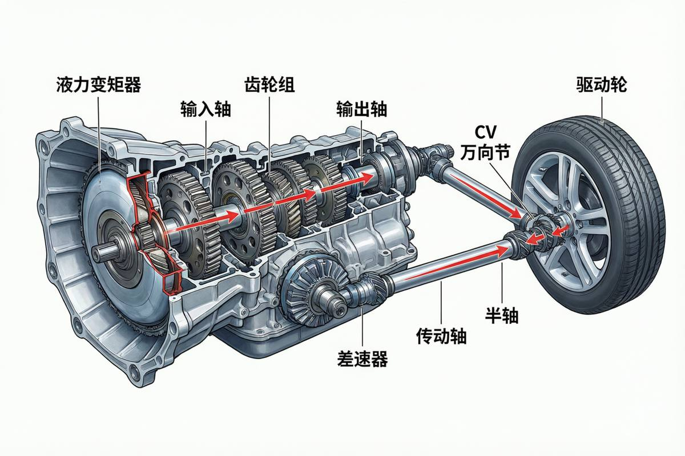
🔗 传动系统的作用
传动系统负责将发动机输出的动力（扭矩和转速）传递给驱动轮，同时实现变速变矩、倒车和空挡等功能。发动机在高转速小扭矩时效率最高，但车轮需要低转速大扭矩来起步和爬坡——变速箱正是解决这个矛盾的关键。
🔩 传动系统核心零部件
前驱（FF）：发动机和驱动轮都在前方，结构紧凑、成本低、空间利用率高，大多数家用车采用。
后驱（FR）：发动机前置、后轮驱动，前后重量分配好、操控性强，豪华车和运动车偏爱。
四驱（4WD/AWD）：四个车轮都有驱动力，抓地力强，适合越野和湿滑路面，但油耗和重量更高。
底盘与悬架系统
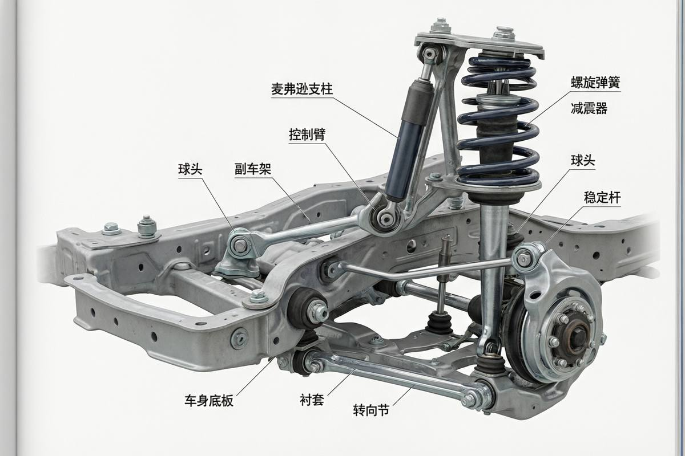
🏗️ 底盘结构类型
底盘是汽车的骨架，承载所有机械部件和乘员。现代汽车主要有两种底盘结构：
承载式车身（Unibody）：车身外壳和底盘框架融为一体，由冲压钢板焊接而成的整体结构。重量轻、重心低、碰撞安全性好，是绝大多数轿车和城市SUV的选择。
非承载式车身（Body-on-Frame）：车身安装在独立的梯形或箱型车架上。承载能力强、越野性能好，常见于皮卡、硬派越野车和商用车。
🔩 悬架系统核心零部件
制动系统
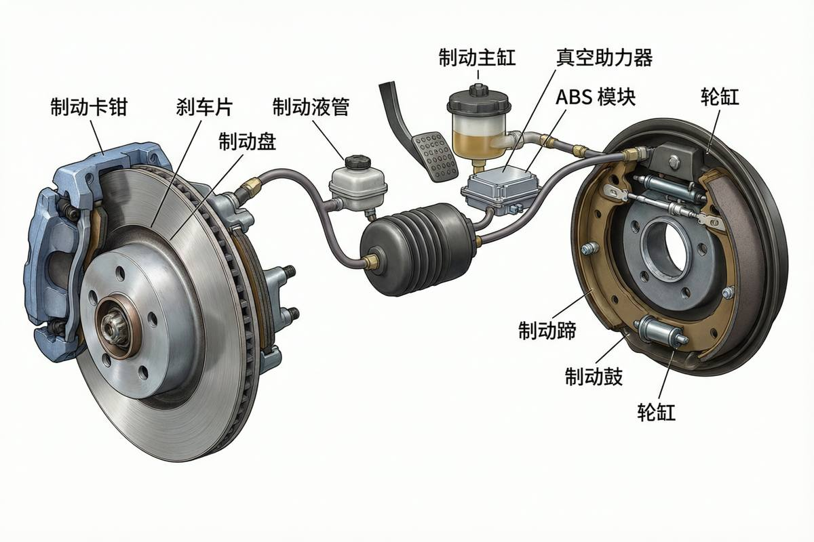
🛑 制动系统工作原理
制动系统的核心原理是摩擦制动：将车辆的动能通过摩擦转化为热能散发到空气中。踩下制动踏板时，制动液在密闭管路中传递压力（帕斯卡原理），推动制动卡钳或制动蹄压紧旋转的制动盘/鼓，产生摩擦力矩使车辆减速。
现代汽车普遍采用液压制动系统，前轮使用制动力更大的盘式制动（Disc Brake），后轮根据车型配置使用盘式或鼓式制动（Drum Brake）。
🔩 制动系统核心零部件
刹车片厚度低于3mm应立即更换；制动盘出现深沟槽或厚度不均需光盘或更换；制动液含水率超过3%必须更换（可用检测笔测试）；如果制动时方向盘抖动，通常是前制动盘变形。制动系统关乎生命安全，建议每10,000km检查一次。
转向系统
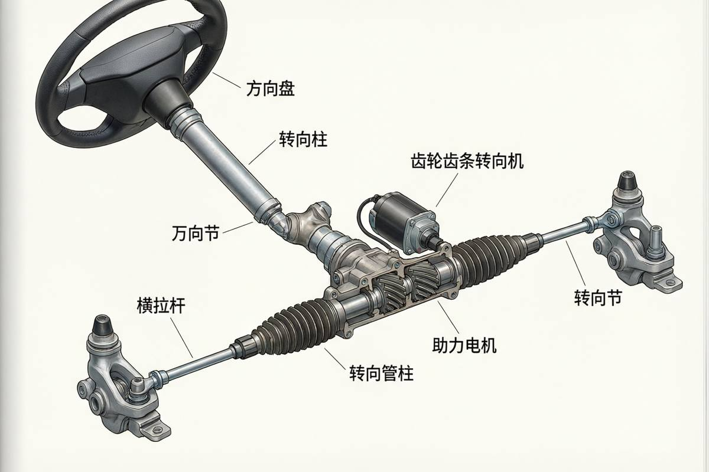
🎯 转向系统工作原理
转向系统的作用是将驾驶员转动方向盘的动作传递到前轮（有时也包括后轮），改变车辆行驶方向。转动方向盘时，转向柱将旋转运动传递到转向机，转向机将旋转运动转化为横向的推拉运动，通过拉杆推动转向节使车轮偏转。
现代汽车几乎全部配备助力转向系统，大幅减小转向所需的力量。主流类型包括：液压助力转向（HPS）、电子液压助力转向（EHPS）和电动助力转向（EPS/EPAS），其中EPS因节能和可编程性已成为绝对主流。
🔩 转向系统核心零部件
冷却系统
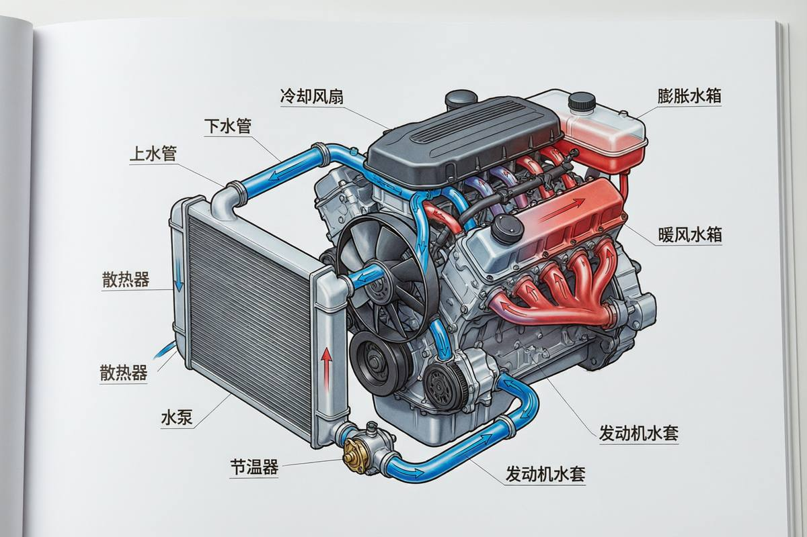
❄️ 冷却系统工作原理
发动机燃烧温度可达 2000°C 以上，但金属部件和机油的工作温度上限只有约 100-110°C。冷却系统的任务就是持续带走多余热量，让发动机维持在 85-105°C 的最佳温度区间。
现代汽车采用强制循环水冷系统：水泵驱动冷却液在发动机水套和散热器之间循环，冷却液吸收发动机热量后流经散热器，由风扇和行驶风冷却后再次循环。
🔩 冷却系统核心零部件
燃油系统
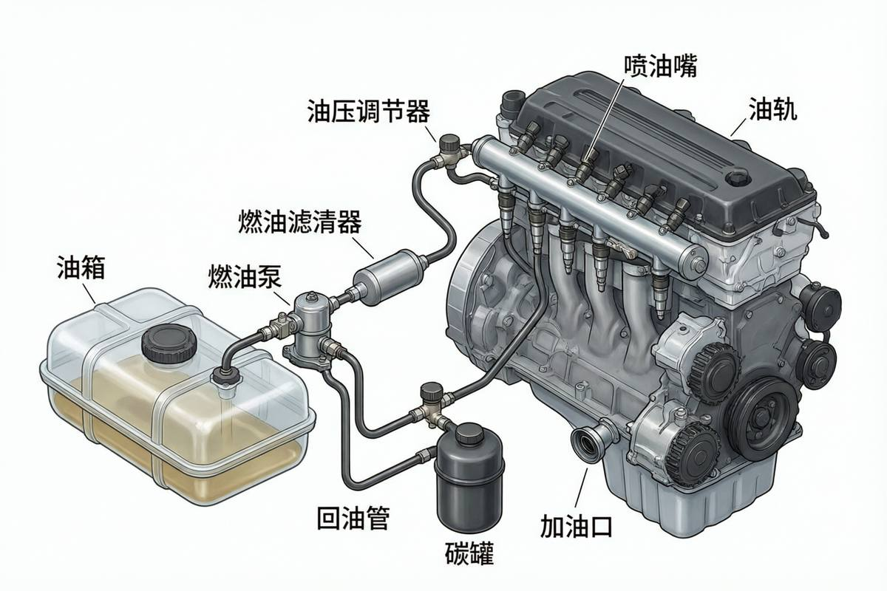
⛽ 燃油系统工作原理
燃油系统负责将汽油或柴油从油箱输送到发动机气缸内，以精确的量和时机进行喷射。现代汽车普遍采用电子燃油喷射（EFI）系统，由ECU根据各传感器信号精确控制喷油量和喷油时刻，取代了老式的化油器。
直喷发动机（GDI/FSI/TSI）将喷油嘴直接安装在气缸内，燃油以极高压力（可达 200-350 bar）直接喷入燃烧室，实现更精确的控制和更高的燃烧效率。
🔩 燃油系统核心零部件
排气系统
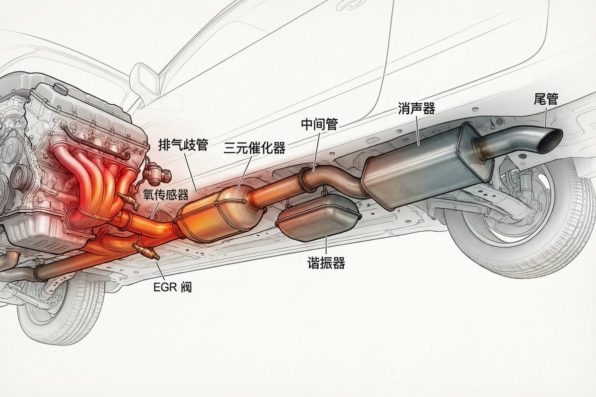
💨 排气系统的作用
排气系统承担三项核心任务：收集并排出废气（将各缸燃烧后的废气汇集并引至车尾排放）、净化有害气体（通过催化转化器将CO、HC、NOx转化为无害的CO₂、H₂O和N₂）、降低排气噪音（通过消声器衰减排气脉冲产生的噪音）。
🔩 排气系统核心零部件
电气系统
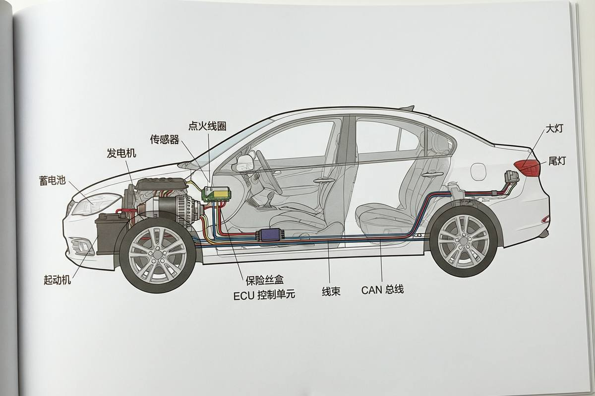
⚡ 电气系统概述
现代汽车的电气系统越来越复杂，从最初的点火和照明发展为涵盖发动机管理、安全系统、信息娱乐、驾驶辅助等数十个子系统的庞大网络。汽车的电气架构正在从传统的12V向48V轻混和高压混动/纯电平台演进。
电气系统的核心是"发电—储电—用电"循环：发动机带动发电机发电，电能储存在蓄电池中，各用电设备从电池/发电机获取电力。
🔩 电气系统核心零部件
车身结构
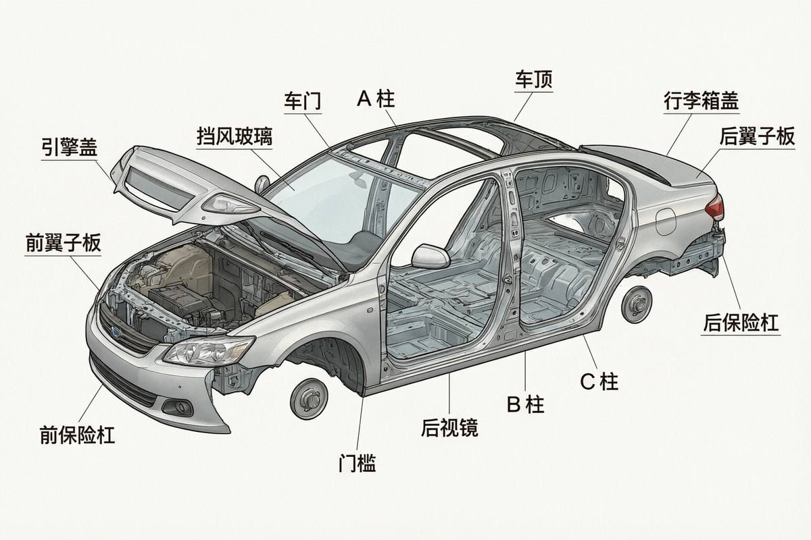
🚘 车身结构与材料
车身不仅是汽车的外观造型，更是保护乘员安全的"堡垒"。现代车身设计融合了空气动力学（降低风阻Cd值，减少风噪和油耗）、碰撞安全（吸能区+高强度乘员舱）和轻量化（提高燃油经济性和操控性）三大目标。
车身材料正从传统的低碳钢向高强度钢（HSS/UHSS）、铝合金、碳纤维复合材料和工程塑料等多元方向发展。高端车型已经实现全铝车身（如捷豹、奥迪A8）。
🔩 车身主要部件
车轮与轮胎
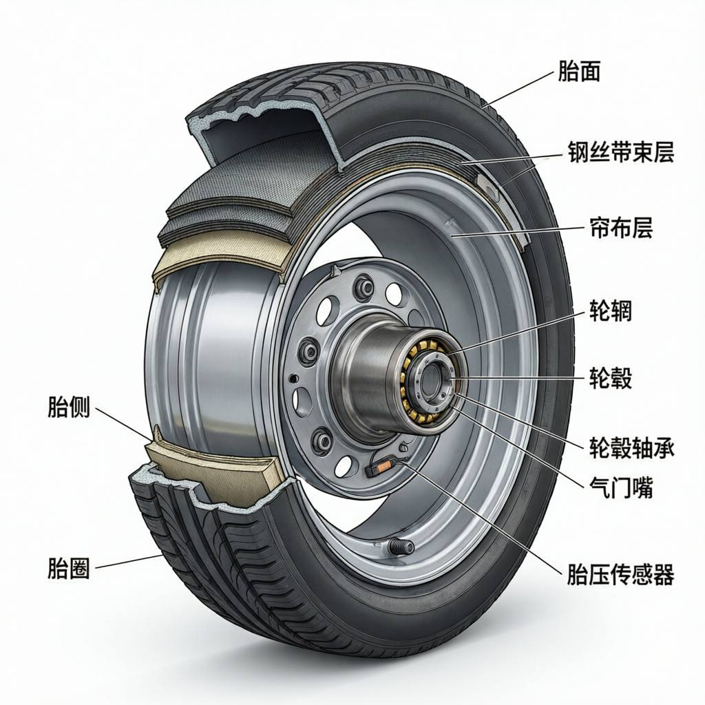
🛞 轮胎是唯一接触地面的部件
轮胎是汽车与路面之间唯一的连接点——四个轮胎的接地面积加起来大约只有四张明信片大小，却要承担加速、制动、转向和承重全部任务。轮胎的状态直接决定了车辆的抓地力、操控性和安全性。
轮胎规格通常标注在胎侧，如 225/45R17 表示：胎宽225mm、扁平比45%（胎壁高度=225×45%=101mm）、R=子午线结构、17英寸轮辋直径。
🔩 车轮与轮胎核心零部件
每月检查一次胎压（标准值贴在驾驶员侧门框上，通常2.2-2.5bar）；每10,000km做一次轮胎换位（前后交叉对调）以均匀磨损；轮胎使用超过5年即使花纹足够也建议更换（橡胶老化）；四轮定位偏差会导致轮胎偏磨和跑偏。
内饰与仪表
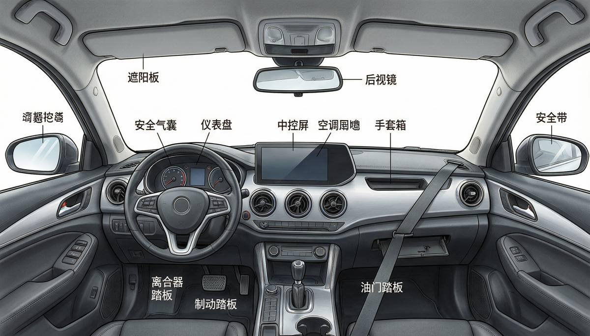
🪑 驾驶舱的人机工程学
驾驶舱是驾驶员与汽车交互的核心空间，设计需要兼顾信息获取的直观性、操作的便利性和乘坐的舒适性。现代驾驶舱正在从传统的物理按键和机械仪表向全液晶仪表、大尺寸触控屏和语音交互方向演进。
🔩 内饰仪表核心部件
三电总览
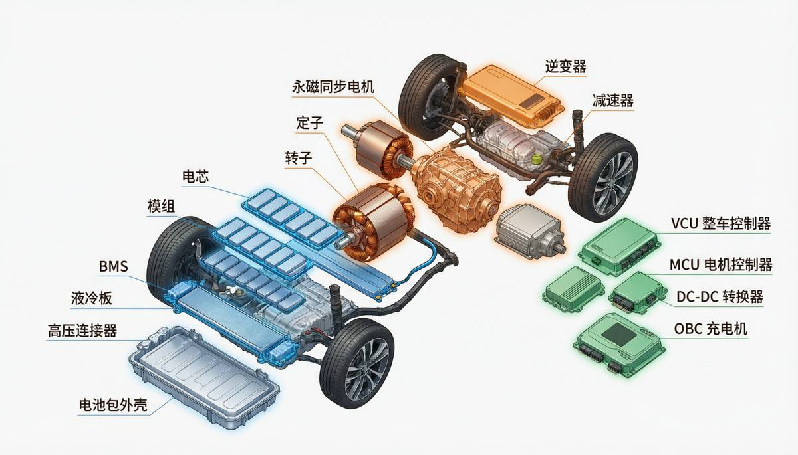
🔋 纯电的核心架构差异
纯电动汽车彻底取消了发动机、变速箱、排气和燃油系统，取而代之的是动力电池+驱动电机+电控系统的"三电"核心架构。最大结构特征是滑板底盘（Skateboard Platform）：电池包平铺底盘下方，前后各布置驱动电机，中间完全平整。
相比燃油车，BEV零部件减少约40-50%（无发动机内部上千运动件），但电池包占整车成本30-40%、重量25-35%。
动力电池
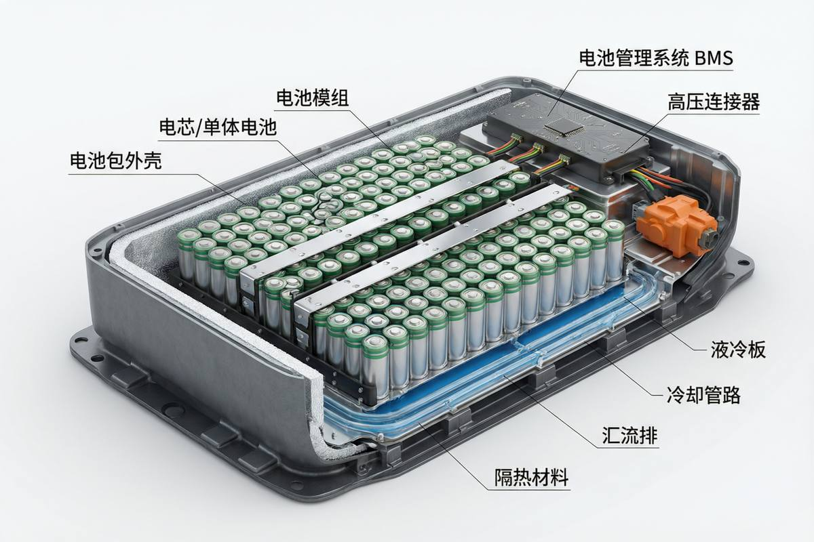
🔋 动力电池系统零部件
电驱动
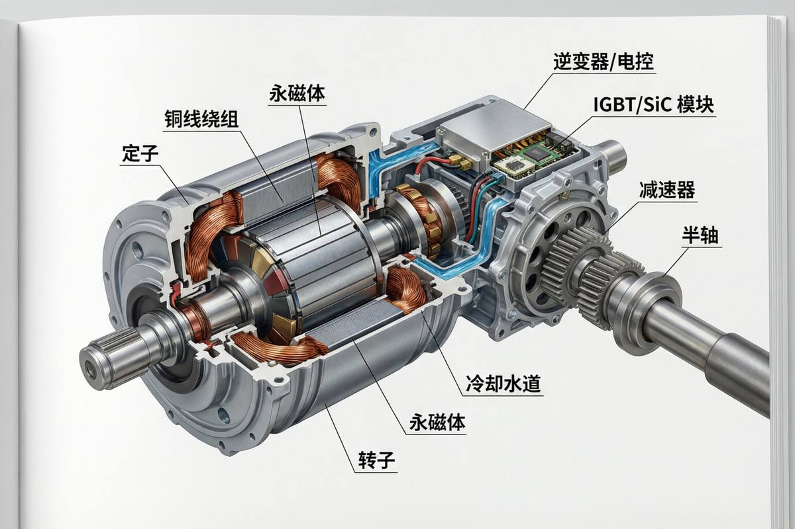
⚡ 电驱动系统零部件
制动回收
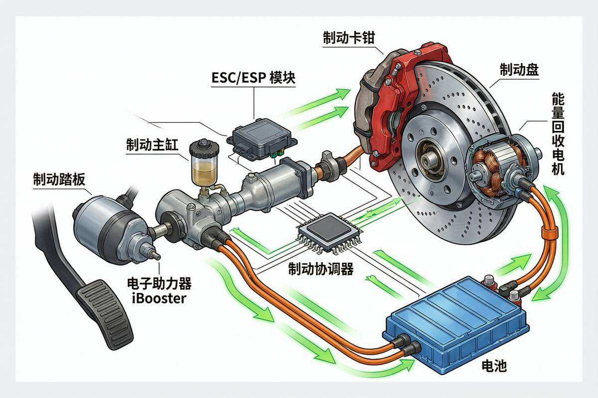
🛑 制动系统零部件
热管理
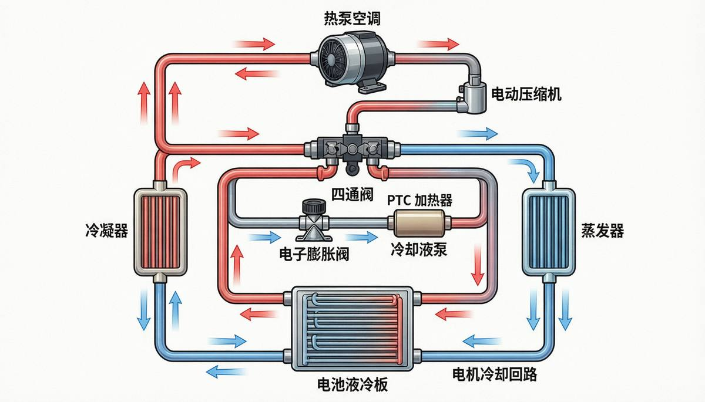
❄️ 热管理系统零部件
充电系统
🔌 充电系统零部件
底盘车身
🚘 底盘/悬架/转向/车身差异
优势：零排放、加速迅猛（瞬时最大扭矩）、使用成本极低（约0.1元/km）、保养简单、智能化程度高。局限：充电时间长（快充30分钟 vs 加油5分钟）、冬季续航衰减20-40%、高速续航打折。
架构总览
🔌 增程式核心架构
增程式电动车本质是"自带发电厂的纯电车"。发动机（增程器）完全不参与驱动车轮，唯一任务是带动发电机发电。车轮始终由电机驱动，驾驶感受与纯电一致。
代表车型：理想L系列、问界M5/M7/M9增程版、深蓝SL03/S7增程版。
增程器系统
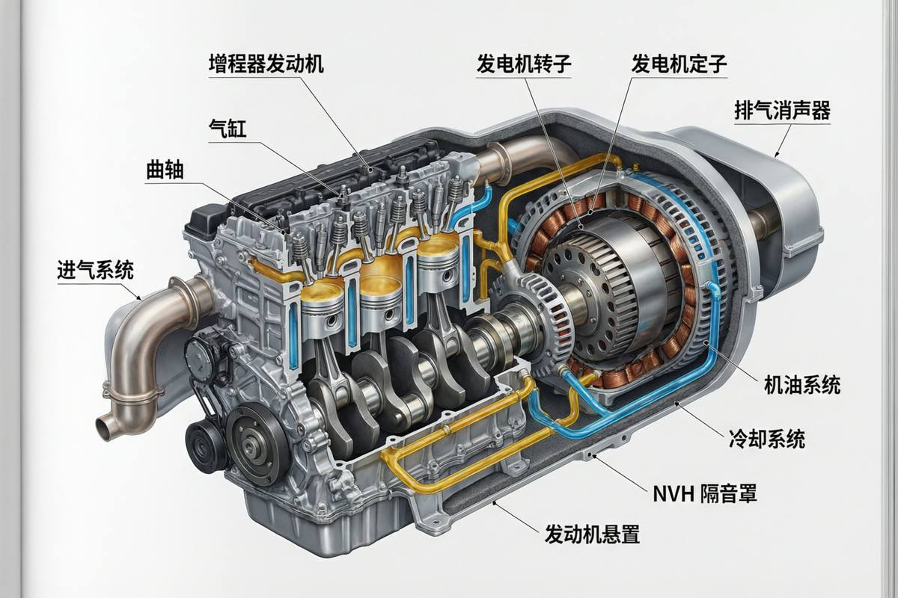
⚙️ 增程器系统零部件
电驱动
⚡ 电驱动系统零部件
热管理
❄️ 热管理系统零部件
制动底盘
🚘 制动/转向/底盘/车身
制动系统（能量回收+机械制动协调）、转向系统（EPS）、底盘悬架、车身结构与纯电BEV基本相同。唯一额外部件是增程器区域的排气系统、碳罐（燃油蒸发控制）和发动机舱隔音。
日常用电（0.1元/km）+长途用油（无焦虑）。满油满电续航1000-1300km。增程器NVH和发电效率是核心技术壁垒。
架构总览
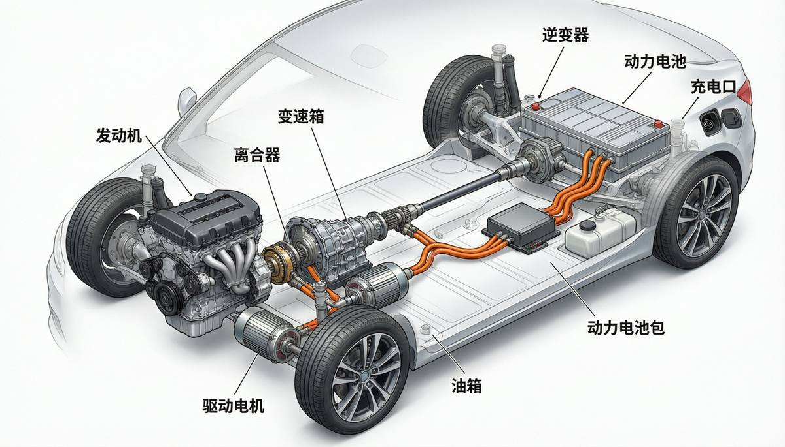
⚡ 插混核心架构
PHEV同时拥有完整燃油动力链（发动机+变速箱）和完整电驱动链（电池+电机），两者可独立驱动也可协同。最"全能"也最复杂的动力架构。
代表车型：比亚迪DM-i/DM-p、吉利银河L系列、长城哈弗/魏牌混动。
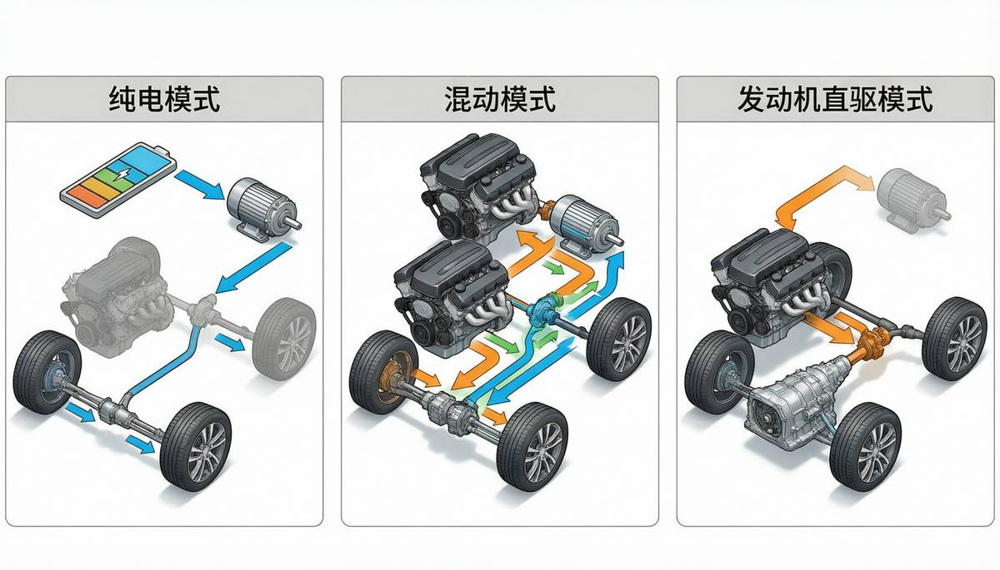
DHT变速箱
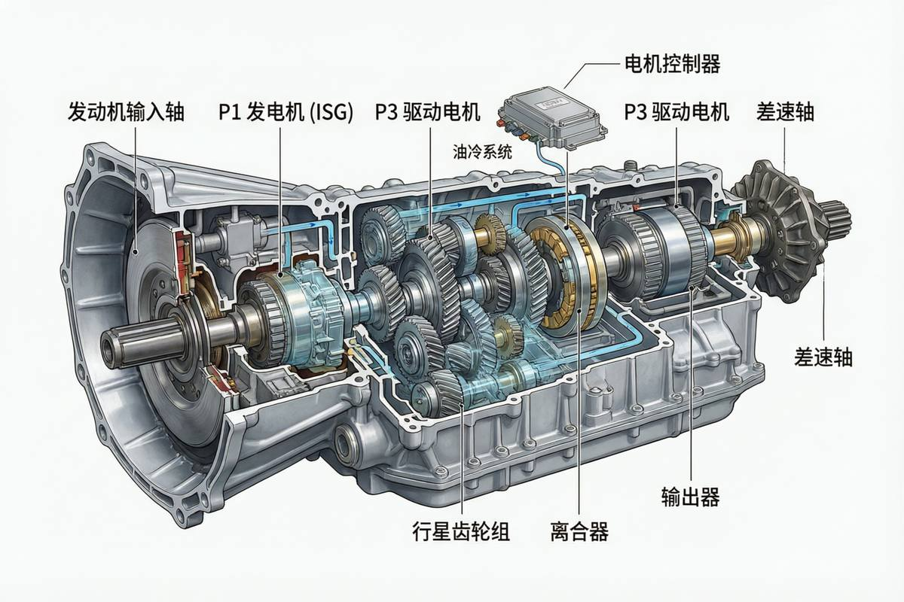
🔩 DHT零部件
发动机
⚙️ 发动机零部件
电池电驱
🔋 电池与电驱动零部件
制动系统
🛑 制动系统零部件
热管理底盘
❄️ 热管理/底盘/转向/车身
热管理同时覆盖发动机冷却（90°C回路）、电驱冷却（60°C回路）和电池温控（30°C回路），以及座舱空调（压缩机+PTC+发动机余热）。复杂度最高但可利用发动机余热节能。底盘悬架/转向/车身与BEV类似，但因同时有发动机和电池，重量分布设计更具挑战。
全工况效率最优：城市用电、高速用油直驱（无二次转换损耗）。
四种动力架构全面对比核心对比
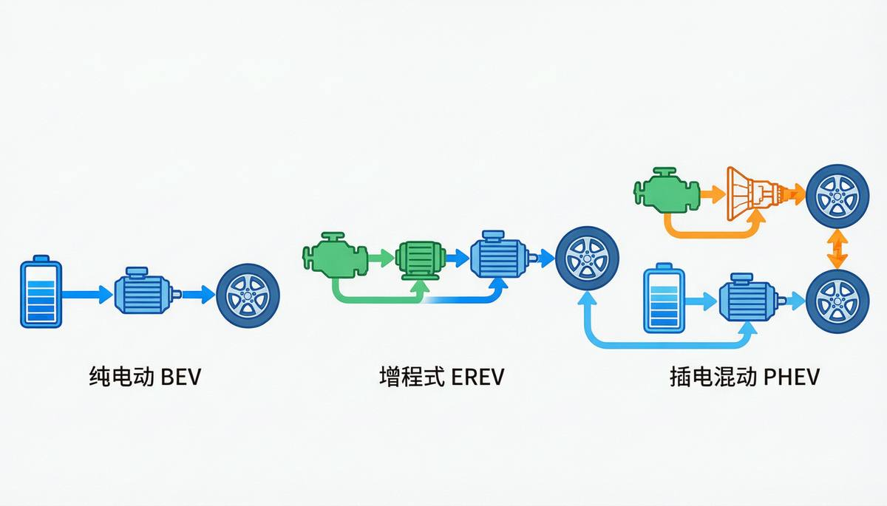
选纯电：有家充，通勤为主，追求最低成本。
选增程：充电一般，经常长途，不想续航焦虑。
选插混：全工况最优效率，高速油耗敏感。
选燃油：充电不便，预算有限，或追求成熟可靠。
总体特征
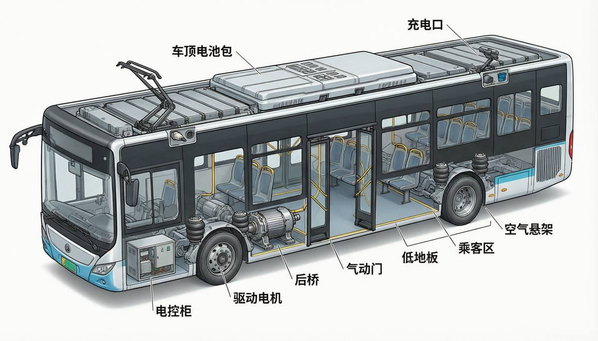
🚌 电动客车总体特征
电动客车因载客量大（60-100人）、车重高（12-18吨）、运营时间长（16-20h/天）的特点，在电池布置、驱动方式、悬架、制动等方面与乘用车有显著差异。中国城市公交电动化率已超80%。
动力电池
🔋 动力电池系统零部件
电驱动
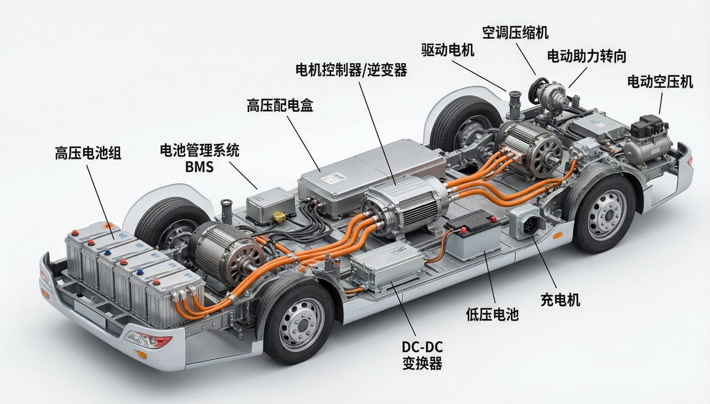
⚡ 电驱动系统零部件
气压制动
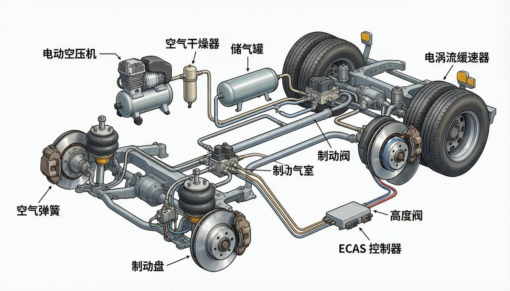
🛑 气压制动系统零部件
空气悬架
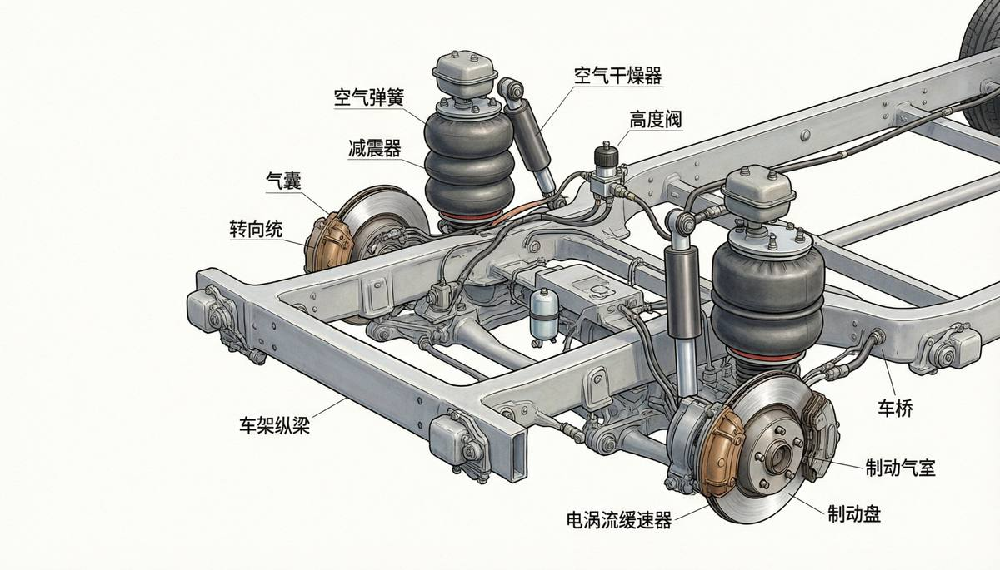
🏗️ 空气悬架系统零部件
高压电气
⚡ 高压电气与辅助系统零部件
充电系统
🔌 充电系统零部件
购车成本是柴油车1.5-2倍，但每公里能源成本仅0.8-1.2元（柴油3-4元），保养降低50%+。8年TCO比柴油车低20-30%。
四大工艺总览
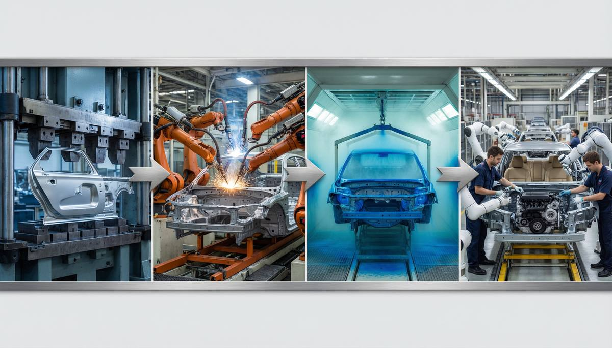
🏭 汽车制造四大工艺概述
一辆汽车从钢板到下线出厂，需要经过四大核心工艺：冲压（Stamping）→ 焊装（Welding）→ 涂装（Painting）→ 总装（Final Assembly）。全球汽车行业百年形成的标准制造流程，无论燃油车还是新能源车，车身制造都遵循此路径。
现代汽车工厂占地 20-50万m²，投资 30-100亿元，年产能 10-30万辆。焊装车间机器人密度可达1000+台/万辆，涂装自动化率>95%。
冲压工艺
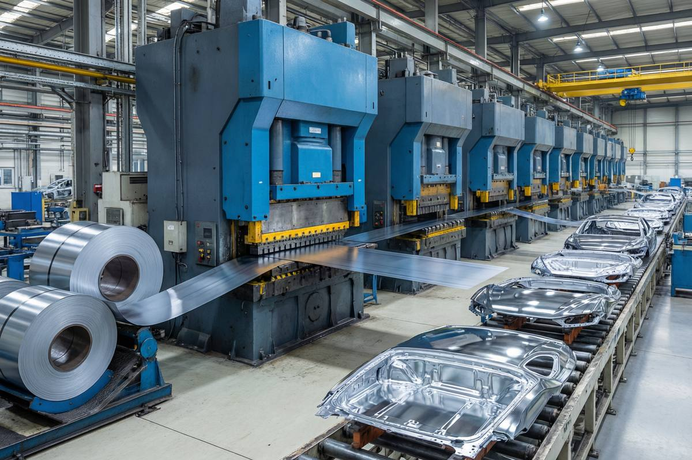
🔨 冲压车间设备与零部件
热成形钢（1500-2000MPa）用于A/B柱/门槛梁，保证安全同时减重30-40%。一体化压铸（Gigacasting）用6000吨压铸机一体成形后地板，替代70+冲压件和1600+焊点。
焊装工艺
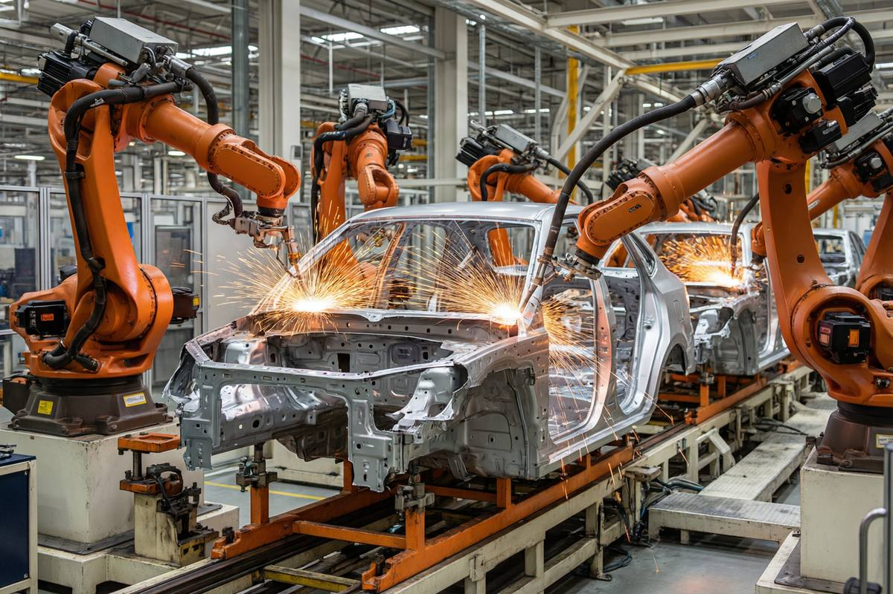
🤖 焊装车间工艺与设备
涂装工艺
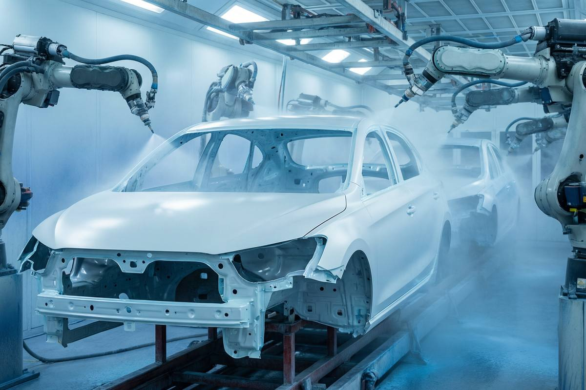
🎨 涂装车间工艺流程
紧凑型工艺（B1B2/3-Wet）取消中涂烘干节能30%。双色车身需精准遮蔽或数字喷墨技术。
总装工艺
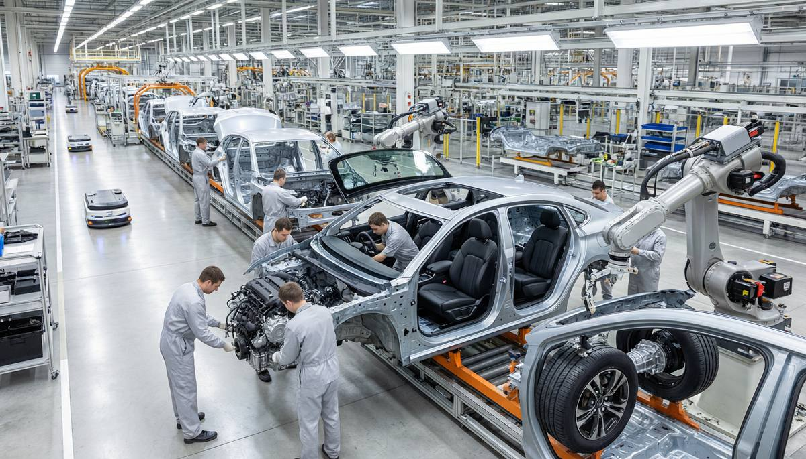
🔧 总装车间工艺与工位
🏭 新能源车总装差异
AGV/AMR无人搬运替代传统输送链实现柔性混产。数字孪生（Digital Twin）实时仿真优化产线节拍。AR辅助装配指导工人。